Sou a filha do meio entre 2 irmãos homens.
Aos 22 anos saí da casa da minha mãe buscando a independência e meu espaço.
Após 1 ano morando sozinha, adotei a Merlin.
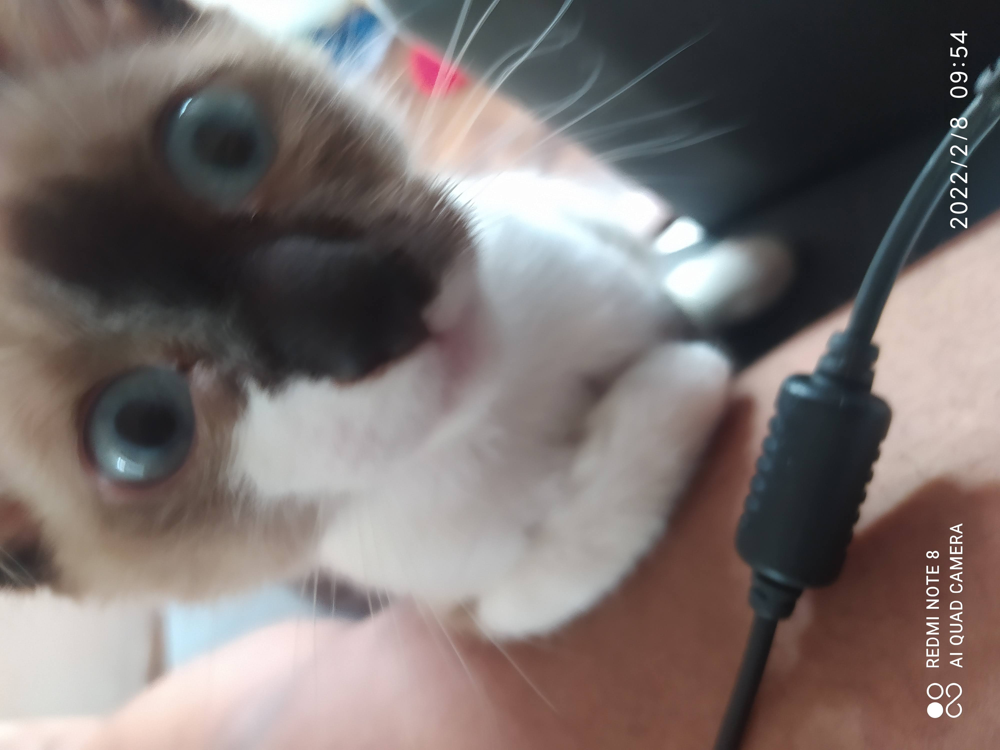
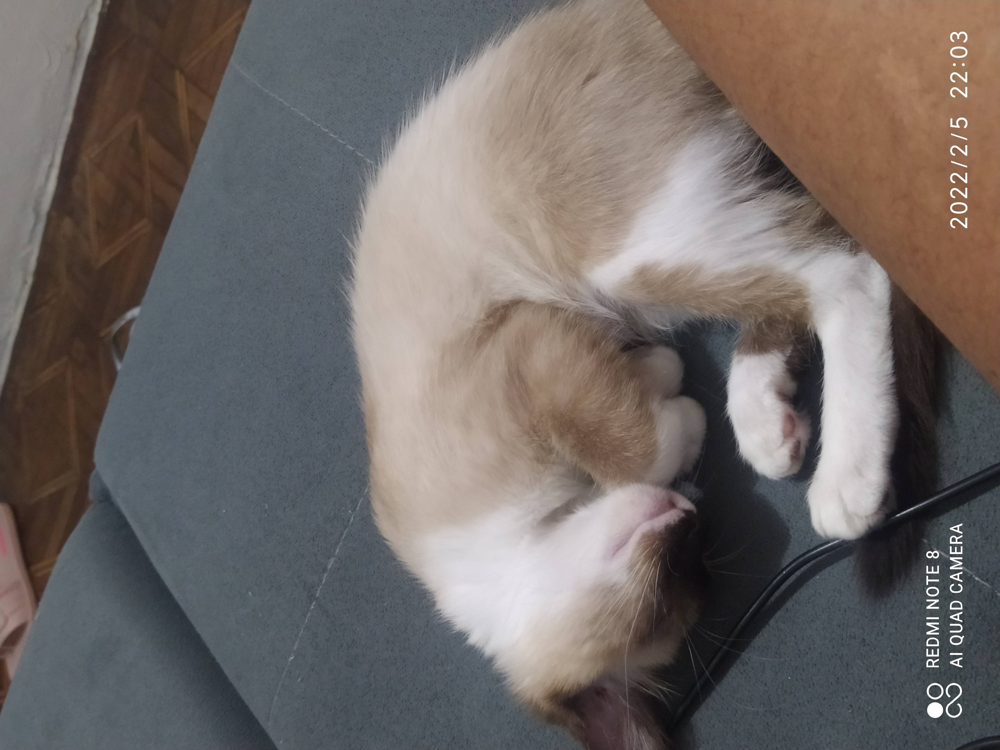
1 ano após a adoção da Merlin, voltei a trabalhar presencial, mas no formato híbrido.
Com a preocupação dela sozinha em casa, adotei o Pingo, que tinha acabado de nascer, em 07 de setembro.
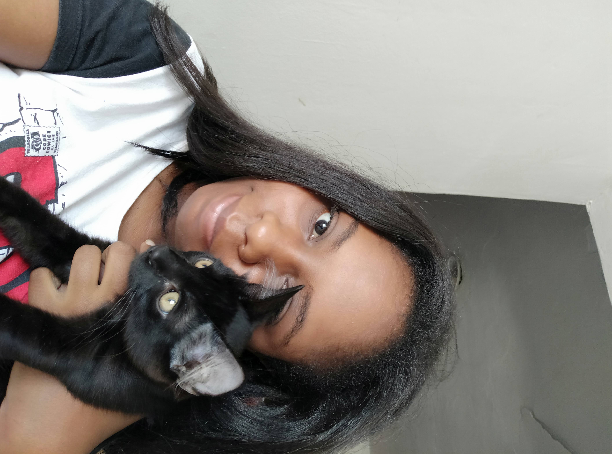
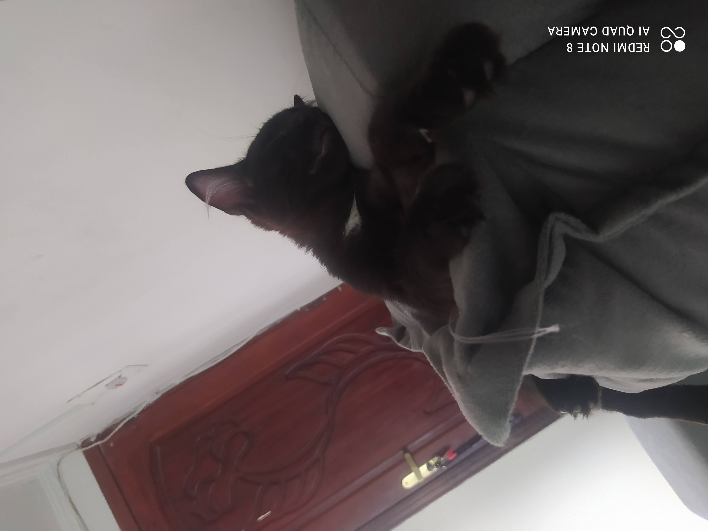
1 ano após a adoção do Pingo, eu já tinha mudado para outra casa.
Tinha recebido uma promoção e novamente estava preocupada com eles sozinhos, mas também querendo mais um bebê.
Foi então que adotei o Bilbo Bolseiro.
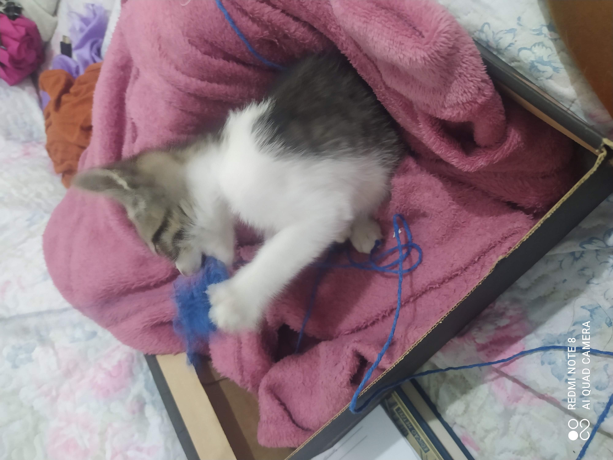
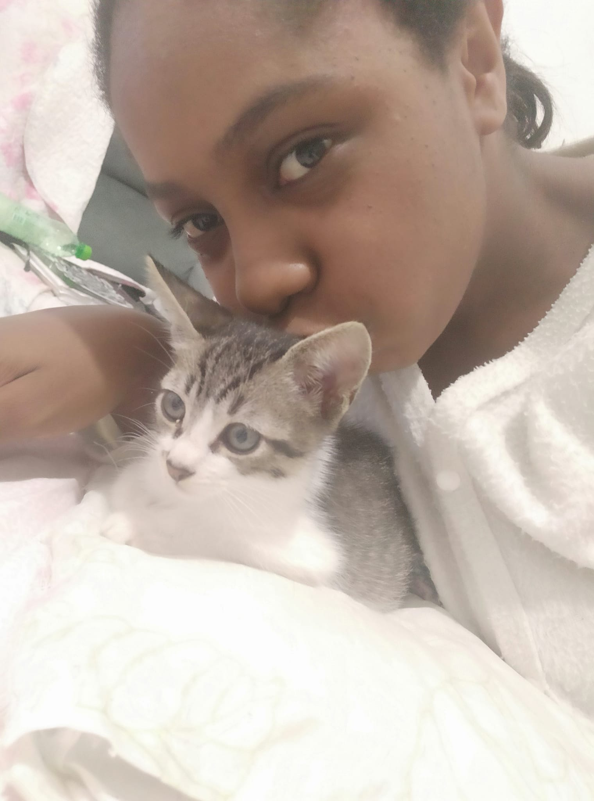
O Bilbo foi uma adoção sem planejamento e totalmente emocional.
Ele foi encontrado na rua por algumas crianças, um bebê que cabia na palma de uma mão.
Não resisti e o adotei, um gatinho com rabo curto que se recusou a ficar somente na caixa.
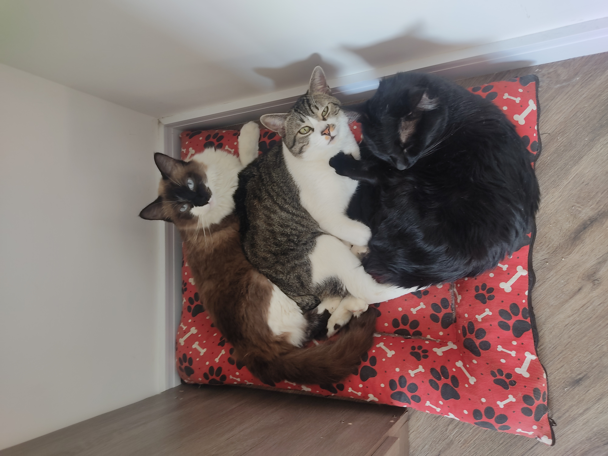
Com isso, hoje tenho 3 gatinhos com 1 ano de diferença de idade cada.
A Merlin é a mais brava, o Pingo o mais bonzinho e o Bilbo Bolseiro é o mais medroso, manhoso e brincalhão.
Se comporta como um caçula.
Eles são os amores da minha vida, considero como meus filhos de tanto amor que sinto por eles.
Mas falando mais de mim, claro, amo One Piece. Tanto que fiz até uma tatuagem de OP, até o momento a única tatuagem.
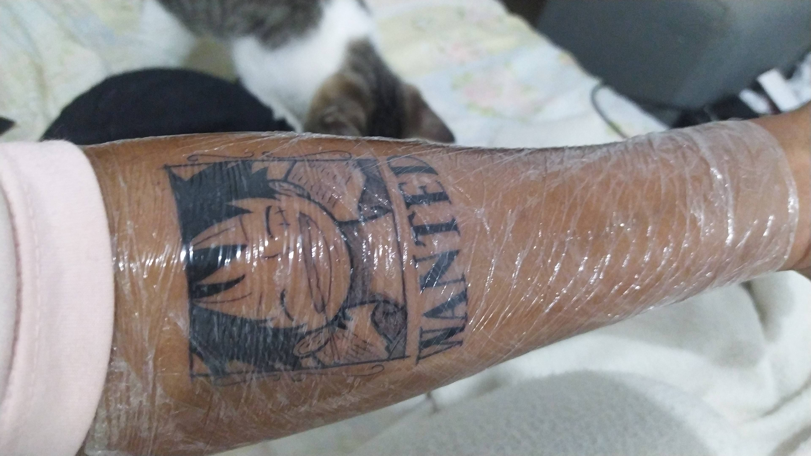
Amo ler. Muito.
Amo colecionar livros. Muitíssimo.
Depois da minha primeira Bienal, não perco mais nenhuma.
Um pouco mais rica e vou na Bienal até do Rio haha.
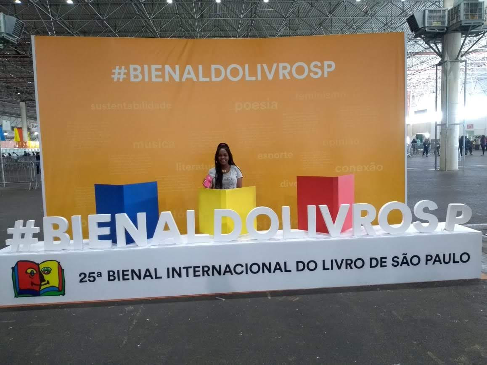
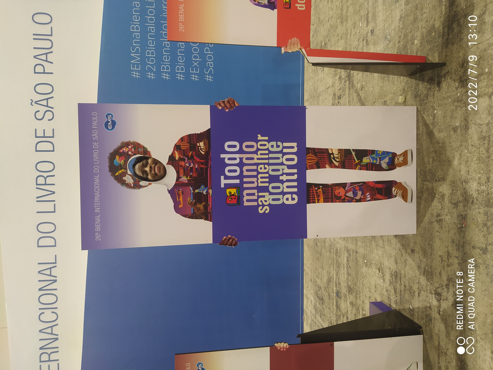
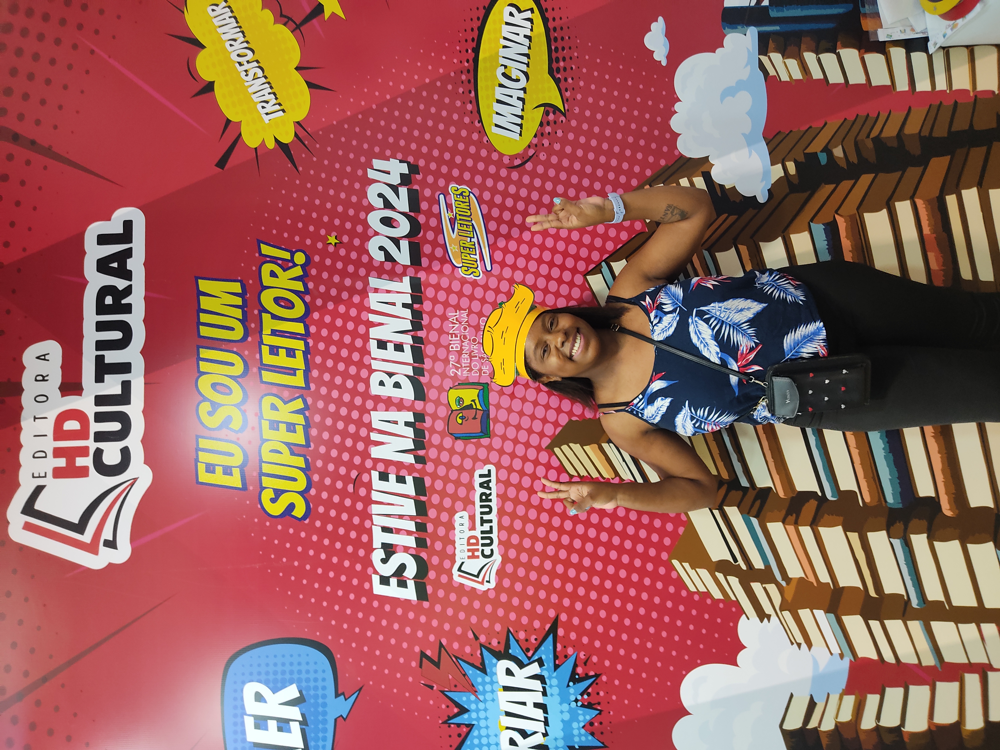
Eu estudei em escola particular até o 1º ano do Ensino Médio. Era uma ótima escola.
Mas infelizmente, eles não entendiam que jovens pobres, sem estrutura familiar e financeira, não tem condições de só estudar.
A falta de compreensão foi tanta, que tiraram o turno da noite do ensino médio, para impedir que os alunos trabalhassem.
Isso aconteceu porque o desempenho na escola, obviamente, caía um pouco. Levantar cedo, trabalhar, ir direto para a escola e depois dormir.
Essa é a rotina de jovens pobres e isso nos prepara muito bem para o mercado de trabalho, faculdade é assim.
Mas apesar de amar muito a escola, tive que sair e ir pra escola pública.
Na escola pública não tinha aula.
Os professores frequentemente ficavam de greve e só tinha aula vaga ou aulas com professores substitutos que passavam conteúdos aleatórios.
Eu quase desisti. Mudei de cidade, então saía do trabalho, ia pra casa tomar banho, pegava um ônibus lotado(sempre) que percorria uma rota
de uma hora e meia para chegar na escola. E quando chegava lá, não tinha nada.
Estamos falando aqui dos anos mais importantes da vida escolar. Vestibular. Emprego. A escola é responsável por esse preparo, e isso não aconteceu na pública.
E na época a escola particular que saí investia em oficinas de redação, aulas complementares aos sábados para preparo de vestibular.
Bom... Depois que terminei meu estágio, eu mudei para uma escola mais próxima, mudei em setembro e o ensino médio acabava em dezembro.
Lembra que falei que só tinha greve na outra escola? Quando cheguei na nova escola, um professor de física me infernizou porque eu não sabia nada
do que ele estava passando, na época até chorei de frustração.Mas ainda teve uma pérola, a professora de inglês foi passar uma prova e pasmem... a prova era a tradução de uma frase.
Literalmente isso, a tradução de uma frase de uma linha.